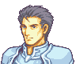

Support Rank C

ゼロット将軍General Zealot.
すでにご存知かと思いますが
私の任務は終了しましたI believe you already know, but my mission has concluded.
ただ 私は引き続き
この軍で戦いたいと思いますHowever, I would like to continue fighting with this army.

ああ 了解したAh, understood.
しかし わからないものだな
運命というのは・・・Still, fate really is an unpredictable thing...
我々の雇い主はリキア同盟
きみたち天馬騎士はエトルリアOur employer was the Lycian League; you pegasus knights served Etruria.
出会うことなどあるまいと
思っていたが・・・I never thought our paths would cross...
はいYes.
エトルリアは 我々をあまり
好ましく思っていないようでしたが・・・Etruria didn't seem to think too highly of us, but...
クレイン将軍には
よくしていただきましたGeneral Klein treated us very well.
そうか・・・I see...
ユーノはきみたちのことを
ずいぶん心配していたぞJuno worried about you two quite a lot, you know.
まあ きみはしっかりしているから
大丈夫だとは思うが・・・Well, you're level-headed, so I imagine you're fine, but...
彼女は心配性だからなShe's just a worrier by nature.
そうですねThat's true.
姉は 私たちに
甘すぎるところがあったので・・・My sister always had a tendency to be too soft on us...
私や シャニーが出かける前にも
お弁当に かえの服に・・・大変でしたBefore Shanna or I would go out, it'd be the packed lunch, a change of clothes... it was a whole ordeal.
はは ユーノらしいHaha, that sounds just like Juno.
Support Rank B
そういえば・・・Come to think of it...
ユーノの・・・きみたちの両親は
どんな方だった？What were Juno's... your parents like?
姉から
聞いておられませんか？Haven't you heard from my sister?
いやNo.
イリア騎士団の兵士だったと
聞いたことはあるのだが・・・I've heard they were soldiers of the Ilian knight corps, but that's all...
はい 母は
イリアの天馬騎士でしたYes, our mother was an Ilian pegasus knight.
私たちが幼いころ
両親は 同じ戦場で戦死を・・・When we were young, our parents both fell in the same battle...
・・・・・・......
私たち姉妹に
身寄りはなく・・・We sisters had no one else to turn to...
まだ十いくつの頃から 姉は
私とシャニーの母親がわりでしたFrom when she was still barely a teenager, my sister became like a mother to Shanna and me.
そうだったのかSo that's how it was.
ふつうの女の子が
恋をしたりするはずの時期に・・・During the time when an ordinary girl should have been falling in love...
姉は 私たちの母でなければ
ならなかったんですmy sister had to be our mother instead.
ですが ユーノ姉さんは
そんなこと一言もこぼさずに・・・But sister Juno never once complained about it...
笑って私たちの面倒を
みてくれましたShe looked after us with a smile the whole time.
ですから 姉には・・・
必ず幸せになって欲しいと願っていましたThat's why I always wished, with all my heart, that she would find happiness.
Support Rank A
・・・結婚式の時は
きみたちには世話になったな...You two really helped us out a lot at the wedding.
式の準備や 食事を
つくってくれたり・・・Preparing for the ceremony, making the food...
きみとシャニーが送ってくれた
お祝いの品The gift you and Shanna sent us,
ユーノはとても喜んでいたよJuno was overjoyed by it.
そうですか・・・？Was she...?
私は反対したんですけど・・・
シャニーったら言い出すと聞かなくてI was against it, but once Shanna had an idea in her head, there was no stopping her.
はは・・・まあ いいじゃないか
あれもHaha... well, it was nice all the same.
しかし あの式
ユーノにはすまないと思っているStill, I do feel sorry to Juno about that ceremony.
もっと私が・・・ 国が豊かであれば
はなやかな式をあげられただろうにIf I... if our country had been more prosperous, we could have given her a grander wedding.
いえ 姉はそんなこと
望んでいなかったと思いますNo, I don't think my sister ever wanted something like that.
私 ゼロット将軍には
とても感謝していますI'm deeply grateful to you, General Zealot.
ゼロット将軍と 姉さんの
結婚式・・・At your wedding with my sister...
姉さんのあんな幸せそうな顔・・・
初めてでしたからthat was the first time I'd ever seen her look so happy.
私からもお礼を言いたいですI want to thank you myself, too.
姉さんを幸せにしてくれて・・・
本当にありがとうございますFor making my sister happy... thank you, truly, from the bottom of my heart.